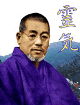
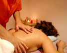
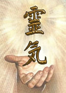

El Reiki es un método de curación natural. Se basa en la transmisión de
energía universal Divina a través de la imposición de manos. La historia
del Reiki tradicional comienza a mediados del siglo XIX, cuando el Dr.
Mikao Usui decano de la Universidad de Kyoto Japón, quien también era
sacerdote cristiano, daba cátedras sobre teología.
En una de sus clases un estudiante le preguntó acerca de cual era la
metodología que usaba Jesús para la curación de los enfermos. Sin una
respuesta clara para dar Usui deja su cargo en la universidad y decide
investigar los métodos de sanación. Su exploración comenzó en los libros
sagrados cristianos y también en los textos del budismo tibetano.
Mikao Usui regresó a Japón e ingresó en un monasterio budista zen en donde
se encontraban textos sobre terapias curativas escritos en sánscrito. Allí
logró encontrar los símbolos y las técnicas de sanación pero era preciso
saber como aplicar este conocimiento. Decide hacer un retiro de veintiún
días en el monte Koriyama.
En el amanecer del último de los días de meditación, recibe un rayo dorado
en su tercer ojo, pierde el conocimiento y cuando se recupera se ve rodeado
de esferas con arco iris y los símbolos del Reiki, recibió en ese momento
la forma en la que debían ser utilizados cada uno de los símbolos, Mikao
Usui estaba siendo iniciado.
Tuvo luego de estos veintiún días varias experiencias como la cura de uno
de sus dedos que al lastimarlo comenzó a derramar sangre en cantidad y con
el uso del Reiki paró la hemorragia. La cura de un dolor de muelas muy
fuerte que padecía la mesera de una posada en donde él paró a comer luego
de su retiro. Y al volver al monasterio encontró postrado al Lama que le
había facilitado todos los textos, con mucho dolor por la artritis que
padecía, e imponiendo sus manos en varias sesiones logró curar al monje. A
esta energía sanadora Usui le puso el nombre de Reiki, que significa Fuerza
Vital Universal.
Hizo prácticas en varios barrios bajos de Kyoto. Comprobó que al hacer
estas curaciones solo como servicio, igualmente esos seres no cambiaban de
vida ...
seguían mendigando y se volvían a enfermar de las mismas afecciones.
Comprendió que solo estaba curando el cuerpo físico de esos seres y que no
era el camino.
Decidió entonces dar el conocimiento del Reiki como enseñanza, su primer
alumno que llegó a la maestría fue Chujiro Hayashi y luego formó a unos
veinte más que siguieron en la enseñanza por el mundo. Hayashi abrió una
clínica. Una de sus pacientes más renombradas fue Hamayo Takata quien debía
ser intervenida quirúrgicamente, ya internada y lista para la operación,
escucho una voz que le dijo “LA OPERACIÓN NO ES NECESARIA”, entonces habló
con su médico quien con gran apertura aceptó su deseo de experimentar otro
tipo de sanación antes de la intervención, él mismo le aconsejó que fuera
atenderse en la clínica de Hayashi, en donde fue asistida y se curo
totalmente en cuatro meses.
Takata luego de estar un tiempo en Japón aprendiendo las técnicas volvió a
Hawai en donde residía. Hayashi viajó a verla y juntos dieron conferencias,
talleres e iniciaciones. En 1941 Takata sintió un fuerte llamado de su
corazón para ir a ver a Hayashi, él le pidió que ella funde una escuela en
América y siga con el conocimiento porque percibía que por la guerra en
Japón cerrarían la clínica. A los pocos días Hayashi falleció. Takata y su
nieta hicieron una gran difusión del conocimiento permitiendo la expansión
del sistema curativo en todo el mundo. Su nieta continúa con la escuela a
nivel internacional visitando periódicamente cada lugar.
El Reiki Usui se dicta en tres niveles: primer nivel, segundo, y maestría.
Creo a nivel personal que es el modo más sintético de darlo ya que los
tiempos aceleran y el planeta necesita sanación urgente.

Reiki es la energía universal que cura, es una manifestación del amor más
puro del gran padre-madre Creador. Este sistema de curación natural y en
orden con el cosmos se transmite como antes mencioné a través de la
imposición de manos. Con las iniciaciones también llamadas sintonizaciones
o alineaciones, el maestro abre canales despejando y armonizando los
chakras para que no haya obstrucciones y la energía pueda fluir
naturalmente.
Tenemos que diferenciar una sesión de una iniciación. En una sesión el
paciente recibe energía universal que armoniza cuerpo, mente y espíritu. El
paciente percibe la energía, la puede sentir y a través de varias sesiones
(las cuales dependerán de la enfermedad) lograr la curación o armonización
deseada.
Al iniciarse en Reiki la diferencia es que la comunicación con el prana, ki
o Chi que es el fluido energético universal es continuo e inagotable. La
iniciación aumenta la energía vital del terapeuta y le aporta el poder de
canalizarla para tratar a otros seres. Cuando un ser que es canal de Reiki
está dando una sesión a otro ser, también está recibiendo porque la energía
circula por sus canales para llegar al paciente.
Niveles de iniciación
En el primer nivel se experimenta básicamente una auto depuración,
armonización y sanación que debe ser realizada por veintiún días
consecutivos para lograr una buena sintonización. A partir de ese momento
puede atender a otros seres sin dejar de atenderse a sí mismo.

El segundo paso en el camino de aprendizaje del Reiki es la iniciación en
segundo nivel en el cual se transmiten al terapeuta en formación tres
símbolos que potencian la curación. En los principios del Reiki se usaban
aproximadamente 2500 símbolos. Ahora solo se usan cinco o seis, de los
cuales tres se dan en segundo nivel.
Cada símbolo es un nivel dentro del camino hacia la iluminación, por lo
cual es tan importante meditar sobre cada uno de ellos. En la alineación de
segundo nivel aumenta el flujo de energía curativa y el direccionamiento de
la misma, de manera más específica a los aspectos emocionales, mentales y
kármicos.
Después de recibir este nivel la depuración es de seis meses
aproximadamente en donde hay una remoción profunda de emociones no
resueltas en el pasado tanto de esta como de otras encarnaciones.En este
nivel además de que la curación sea más puntual, potente y direccionada,
habilita la posibilidad de la curación a distancia.
En la maestría se profundizan técnicas, se dan los símbolos maestros y se
inicia el camino de la iluminación. A este grado llegan seres que dominan
la disciplina en los niveles anteriores. En esta última sintonización ya no
hay tantos procesos de limpieza sino que se comienza a gozar de las
sesiones que son más profundas en recibir y dar.
Sigue a estos niveles el quinto nivel que es definido como la iniciación
del Sensei, este es un experto en sanación, sabe como utilizar la energía
de curación y también dar enseñanza. Al llegar a este grado el maestro ha
demostrado ser un maestro de vida siendo respetado, reconocido y sobre
todas las cosas humilde.
Al sexto nivel se accede solo por invitación la cual se realiza en una sola
oportunidad por los maestros de séptimo nivel. Los maestros de sexto nivel
son maestros itinerantes pero cada vez que son convocados por el grupo del
séptimo nivel deben acudir y prestar servicio.
El séptimo nivel lo conforman solo diez maestros en todo el mundo, ellos
viven en retiro, son misioneros del servicio de la curación.
El Dr. Mikao Usui más allá del nivel por el cual el terapeuta esté
transitando tenía como lema fundamental el siguiente “LA META CON EL USO
DEL REIKI ES FELICIDAD, CURACION, E ILUMINACION”.
Los principios del Reiki nos permiten vivir más sanamente, a continuación
los enumeramos.
“Sólo por hoy no te preocupes.
Sólo por hoy no te enojes.
Honra a tus padres, maestros y mayores.
Gánate la vida honradamente.
Demuestra gratitud hacia todo ser vivo”.